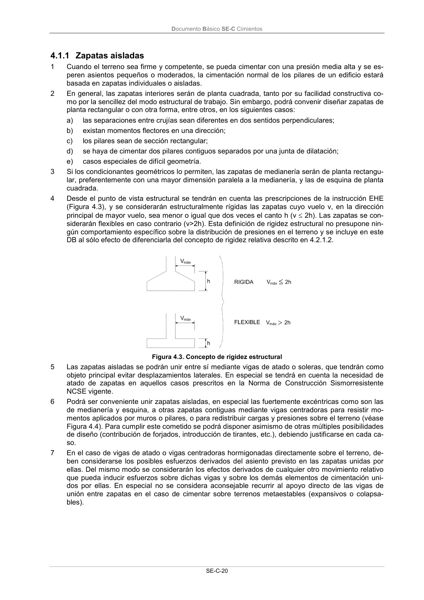

DB-SE-C · Definiciones y tipologías · versión 2019-12-20 · capa oficial
Formatos: JSON compacto · Markdown · PDF fuente
Ámbito del documento · texto del ámbito · documento y tablas
ID técnico a0048 · PDF pág. 24-25 · jerarquía no validada por persona · contrastado con el literal de la página 24 (candidato tipográfico); no validado por persona · padre: a0010
Definiciones y tipologías 1 Una cimentación directa es aquella que reparte las cargas de la estructura en un plano de apoyo horizontal (véase Figura 4.1). Las cimentaciones directas se emplearán para trasmitir al terreno las cargas de uno o varios pilares de la estructura, de los muros de carga o de contención de tierras en los sótanos, de los forjados o de toda la estructura. 2 Cuando las condiciones lo permitan se emplearán cimentaciones directas, que habitualmente, pero no siempre, se construyen a poca profundidad bajo la superficie, por lo que también son llamadas cimentaciones superficiales. Figura 4.1. Cimiento directo 3 Los tipos principales de cimientos directos y su utilización más usual se recogen en la tabla 4.1. Figura 4.2. Tabla 4.1. Tipos de cimientos directos y su utilización más usual Tipo de cimiento directo Elementos estructurales más usuales a los que sirven de cimen- tación Zapata aislada Pilar aislado, interior, medianero o de esquina Zapata combinada 2 ó más pilares contiguos Zapata corrida Alineaciones de 3 o más pilares o muros Pozo de cimentación Pilar aislado Emparrillado Conjunto de pilares y muros distribuidos, en general, en retícula. Losa Conjunto de pilares y muros Figura 4.2. Tipos de cimentaciones directas Documento Básico SE-C Cimientos SE-C-20

PDF fuente redistribuible: copia fiel enlazada en esta página (SHA256 verificado).